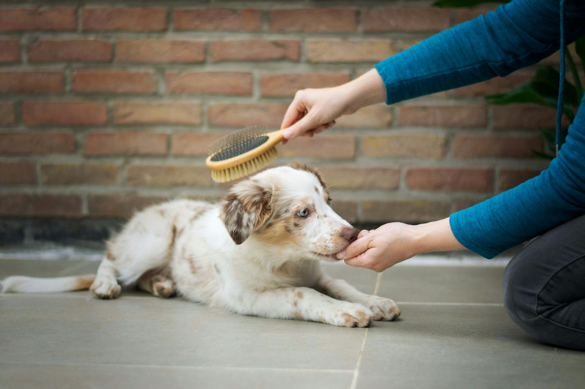

Booking is easy and flexible. Use our KIBB online portal or mobile app to select your dates, service type (drop-in, overnight, or dog walking), and meet your sitter. You can also call us at (478) 555-0123 — we recommend booking at least 48 hours in advance for regular visits, and 1 week ahead for holidays or overnight stays. Same-day requests are accommodated when possible.
We understand plans change. Cancellations made more than 48 hours before the scheduled service are free of charge. Cancellations within 24–48 hours incur a 50% fee. Within 24 hours or no-shows are charged the full service amount. For emergencies or illness, please contact us directly — we handle these case-by-case with compassion.
Your dog’s safety is our top priority. All KIBB sitters are background-checked, insured, and trained in pet first aid & CPR. We use secure harnesses and leashes, and follow your home safety protocol. For overnight stays, we provide daily photo updates and a 24/7 emergency line. We also maintain a no-contact policy with unknown dogs during walks to avoid incidents.
To keep all dogs safe, we require proof of:
- Rabies (current within 1 or 3 years per local law)
- DHPP (Distemper, Hepatitis, Parvovirus, Parainfluenza)
- Bordetella (kennel cough) — recommended, and required for group play or overnight stays
Please upload vaccination records through our portal or email them to records@kibb.com. We also recommend flea & tick prevention, especially during warmer months.
We act immediately. Sitters are trained in pet first aid and will contact you right away using your preferred method. If we cannot reach you or your vet, we will take your dog to the nearest 24-hour emergency veterinary clinic (we keep a list of your preferred providers). All incidents are documented, and we follow up with a full report. KIBB sitters are covered by our liability insurance for any accidental injury during care.
Absolutely! We offer a free meet-and-greet (in-person or virtual) before your first service. This helps your dog become familiar with the sitter and allows us to learn your routine, feeding schedule, and any quirks. Simply request a meet-and-greet when you book, and we’ll arrange a time that works for you.